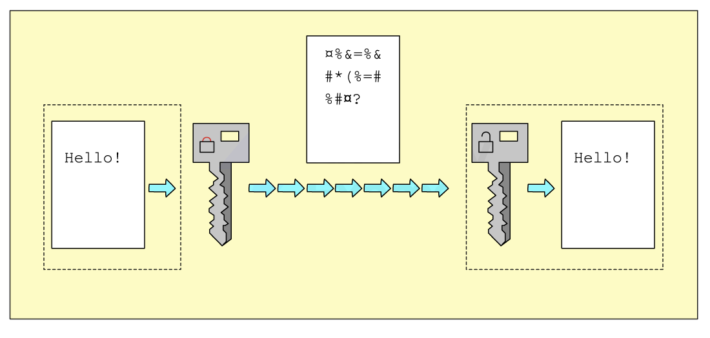

Big Idea 5 — Impact of Computing (IOC): Review Notes
Syllabus: AP Computer Science Principles — Course and Exam Description, Effective Fall 2020
Exam Weight: 21–26% of AP Exam
Topics: 5.1–5.6
AP Classroom: Topic Questions ~20 multiple-choice
Overview
The creation of computer programs can have extensive impacts, some unintended, on societies, economies, and cultures. This big idea explores those effects, the legal and ethical concerns that come with programs, and the responsibilities of programmers. When using computing innovations and transmitting information via the Internet, students should be aware of the risk of sharing personally identifiable information about themselves, such as their age or address, and actively take steps to keep this information safe. This big idea can be integrated throughout the course and works well with the Creative Development, Data, and Computing Systems and Networks big ideas.
In this big idea you will learn to:
- Explain how an effect of a computing innovation can be both beneficial and harmful, and how a computing innovation can have an impact beyond its intended purpose
- Describe issues that contribute to the digital divide
- Explain how bias exists in computing innovations
- Explain how people participate in problem-solving processes at scale
- Explain how the use of computing can raise legal and ethical concerns
- Describe the risks to privacy from collecting and storing personal data on a computer system
- Explain how computing resources can be protected and can be misused
- Explain how unauthorized access to computing resources is gained
-
Know your vocabulary cold. This big idea is definition-heavy: digital divide, citizen science, crowdsourcing, plagiarism, Creative Commons, open source, open access, PII, multifactor authentication, phishing, keylogging, rogue access point, and encryption are all classic AP CSP multiple-choice targets.
-
Answer the “both beneficial and harmful” questions with both sides. Whenever a scenario asks whether an effect is beneficial or harmful, remember IOC-1.A.4: a single effect can be viewed as both beneficial and harmful by different people, or even by the same person. Name one benefit and one harm to be safe.
-
Memorize the security triad of 5.6: (1) the three MFA categories — knowledge, possession, inherence; (2) the two encryption approaches — symmetric key (one key) vs. public key (public key encrypts, private key decrypts); (3) the three unauthorized-access techniques — phishing, keylogging, rogue access point. Expect scenario-based questions that ask you to classify an attack.
Topic 5.1 — Beneficial and Harmful Effects
Skill: 5.C (Describe the impact of a computing innovation)
Enduring Understanding IOC-1: While computing innovations are typically designed to achieve a specific purpose, they may have unintended consequences.
Key Concepts
Learning Objective [IOC-1.A] — Explain how an effect of a computing innovation can be both beneficial and harmful.
解释计算创新（computing innovation）的某一影响为何可能既有益又有害。核心概念：计算创新由人创造（people create computing innovations），人们完成任务的方式常随之改变；并非所有影响都能被预先预料（unintended consequences 非预期后果）；同一影响对不同人甚至同一个人既可能算有益也可能算有害（IOC-1.A.4）；计算进步也提升了医学、工程、通信、艺术等其他领域的创造力。
- [IOC-1.A.1]: People create computing innovations.
- [IOC-1.A.2]: The way people complete tasks often changes to incorporate new computing innovations.
- [IOC-1.A.3]: Not every effect of a computing innovation is anticipated in advance.
- [IOC-1.A.4]: A single effect can be viewed as both beneficial and harmful by different people, or even by the same person.
- [IOC-1.A.5]: Advances in computing have generated and increased creativity in other fields, such as medicine, engineering, communications, and the arts.
- [IOC-1.A-Ext1]: Cloud computing — the use of remote servers accessed over the Internet to store, manage, and process data — can enhance collaboration and accessibility (users can share documents and work together from anywhere, on any device), but it also introduces new data security and privacy concerns because data is stored on third-party servers outside the user’s control.
Learning Objective [IOC-1.B] — Explain how a computing innovation can have an impact beyond its intended purpose.
解释计算创新为何可能产生超出其预期用途（intended purpose）的影响。核心概念：计算创新常被用于创作者原本未设想的方式（如万维网最初仅为科学界信息交流设计，却催生了社交媒体与电子商务）；某些用途可能对社会、经济或文化造成危害；负责任的程序员（responsible programmers）会尽力考虑非预期用途及其利弊，但不可能预见所有用途；程序被快速传播并拥有大量用户时，可能带来远超程序员预期或控制的影响。
- [IOC-1.B.1]: Computing innovations can be used in ways that their creators had not originally intended: The World Wide Web was originally intended only for rapid and easy exchange of information within the scientific community; Targeted advertising is used to help businesses, but it can be misused at both individual and aggregate levels; Machine learning and data mining have enabled innovation in medicine, business, and science, but information discovered in this way has also been used to discriminate against groups of individuals.
- [IOC-1.B.2]: Some of the ways computing innovations can be used may have a harmful impact on society, the economy, or culture.
- [IOC-1.B.3]: Responsible programmers try to consider the unintended ways their computing innovations can be used and the potential beneficial and harmful effects of these new uses.
- [IOC-1.B.4]: It is not possible for a programmer to consider all the ways a computing innovation can be used.
- [IOC-1.B.5]: Computing innovations have often had unintended beneficial effects by leading to advances in other fields.
- [IOC-1.B.6]: Rapid sharing of a program or running a program with a large number of users can result in significant impacts beyond the intended purpose or control of the programmer.
- [IOC-1.B-Ext1]: Machine learning is a computing innovation used to analyze large datasets, identify patterns, and make predictions. Its uses can be beneficial (e.g., machine learning helps detect diseases in medicine), but it can also be misused (e.g., information discovered through machine learning has been used to discriminate against groups of individuals).
Example — Innovations Used Beyond Their Original Purpose
| Innovation | Intended purpose | Unintended / secondary use | Beneficial effect | Harmful effect |
|---|---|---|---|---|
| World Wide Web | Rapid, easy exchange of information within the scientific community | Global communication, social media, e-commerce, streaming | Instant worldwide access to information and services | Misinformation spreads; privacy and distraction concerns |
| Targeted advertising | Help businesses reach likely customers | Personalized recommendations, market analysis | Businesses grow; users see relevant content | Misused at individual and aggregate levels to manipulate or discriminate |
| Machine learning / data mining | Enable innovation in medicine, business, and science | Pattern discovery in large datasets | Faster medical diagnosis, better products, new science | Discovered information used to discriminate against groups of individuals |
Example — How Tasks Change with New Innovations
- Before smartphones: getting directions meant asking someone, using paper maps, or stopping to print directions. Now: navigation apps (a computing innovation) change how people complete the task of traveling (IOC-1.A.2).
- Before streaming: people rented or bought physical media. Now: on-demand streaming changes how people consume entertainment — and creates new legal and ethical concerns about digital media downloads (IOC-1.B.1, IOC-1.F.11).
Social media is used by hundreds of millions of people, although it was not originally created with every one of its current uses in mind.
(a) Explain how one specific effect of social media can be viewed as both beneficial and harmful by the same person. [2]
(b) State why it is not possible for the programmers who built a social media platform to consider all the ways it will be used. [2]
📖 参考答案 | Reference Answer
(a) A single effect can be viewed as both beneficial and harmful by different people, or even by the same person. For example, the ability to share photos instantly can be beneficial (connecting friends and family) and harmful (posting a photo that a future employer sees and judges) — the very same feature is both a benefit and a risk. [2]
(b) It is not possible for a programmer to consider all the ways a computing innovation can be used, because users continuously invent new uses that the creator did not anticipate, and the innovation spreads quickly to a large number of users beyond the programmer’s control. [2]
The World Wide Web was originally intended only for rapid and easy exchange of information within the scientific community.
(a) Give two examples of uses of the Web that its creators did not originally intend. [2]
(b) For each use in (a), state one way it benefits society and one way it can harm society, the economy, or culture. [4]
📖 参考答案 | Reference Answer
(a) Examples: social media; online streaming of movies and music; e-commerce (online shopping); video-conferencing. (Any reasonable modern use is accepted.) [2]
(b) Example using social media: beneficial — connects people across the world and supports social causes; harmful — enables the rapid spread of misinformation and can damage privacy. Example using e-commerce: beneficial — businesses can reach a global market; harmful — small local stores may lose customers, and consumer data is collected and exploited. [4]
Machine learning and data mining have enabled innovation in medicine, business, and science, but information discovered in this way has also been used to discriminate against groups of individuals.
(a) Give one beneficial example of machine learning in medicine or science. [1]
(b) Explain how a programmer’s responsibility relates to the harmful use of such innovations, and why responsibility alone cannot prevent every misuse. [2]
© State why advances in computing have also increased creativity in other fields, giving one example. [2]
📖 参考答案 | Reference Answer
(a) Example: machine learning analyzes medical images to help detect diseases such as cancer earlier and more accurately. (Any reasonable example is accepted.) [1]
(b) Responsible programmers try to consider the unintended ways their computing innovations can be used and the potential beneficial and harmful effects of these new uses. However, it is not possible for a programmer to consider all the ways a computing innovation can be used, so some harmful uses cannot be prevented in advance. [2]
© Advances in computing have generated and increased creativity in other fields such as medicine, engineering, communications, and the arts — for example, digital tools let artists create and share work in new ways, and simulation software helps engineers design better structures. [2]
Cloud computing stores and processes data on remote servers accessed over the Internet.
(a) State two beneficial effects of cloud computing on collaboration and accessibility. [2]
(b) Explain one new data security or privacy concern introduced by cloud computing, and why it is new. [2]
© State whether a single effect of cloud computing can be viewed as both beneficial and harmful, referencing the relevant learning objective. [1]
📖 参考答案 | Reference Answer
(a) Example: multiple users can share and edit the same documents in real time from anywhere (collaboration); files and data are accessible from any device with an Internet connection (accessibility). [2]
(b) Because data is stored on third-party servers outside the user’s control, the user must trust the provider’s security — if the provider’s servers are breached, the user’s data is exposed, and the provider may also access or use the data. This is a new concern because the user no longer controls where or how their data is stored and protected. [2]
© Yes — a single effect can be viewed as both beneficial and harmful by different people, or even by the same person (IOC-1.A.4): cloud computing is beneficial for collaboration and accessibility, yet harmful in terms of data security and privacy. [1]
Machine learning is used to analyze large datasets, identify patterns, and make predictions.
(a) Define machine learning in terms of what it does with data. [2]
(b) Give one beneficial use of machine learning and one way it can be misused. [2]
© Explain how the beneficial and harmful uses of machine learning relate to a programmer’s responsibility. [1]
📖 参考答案 | Reference Answer
(a) Machine learning is used to analyze large datasets, identify patterns, and make predictions. [2]
(b) Beneficial: machine learning analyzes medical images to help detect diseases such as cancer earlier. Misused: information discovered through machine learning has been used to discriminate against groups of individuals, for example in hiring or loan decisions. [2]
© Responsible programmers try to consider the unintended ways their computing innovations can be used and the potential beneficial and harmful effects of these new uses; however, it is not possible for a programmer to consider all the ways a computing innovation can be used, so some harmful uses cannot be prevented in advance. [1]
Topic 5.2 — Digital Divide
Skill: 5.C (Describe the impact of a computing innovation)
Enduring Understanding IOC-1: While computing innovations are typically designed to achieve a specific purpose, they may have unintended consequences.
Key Concepts
Learning Objective [IOC-1.C] — Describe issues that contribute to the digital divide.
描述造成数字鸿沟（digital divide）的问题。核心概念：互联网接入会因社会经济（socioeconomic）、地理（geographic）、人口统计（demographic）特征以及国家之间的差异而不同；数字鸿沟指基于上述特征而导致的计算设备与互联网接入差异，它既影响群体也影响个人，并引发公平（equity）、接入（access）与影响力（influence）等议题；个人、组织与政府的行为都会影响数字鸿沟。
- [IOC-1.C.1]: Internet access varies between socioeconomic, geographic, and demographic characteristics, as well as between countries.
- [IOC-1.C.2]: The “digital divide” refers to differing access to computing devices and the Internet, based on socioeconomic, geographic, or demographic characteristics.
- [IOC-1.C.3]: The digital divide can affect both groups and individuals.
- [IOC-1.C.4]: The digital divide raises issues of equity, access, and influence, both globally and locally.
- [IOC-1.C.5]: The digital divide is affected by the actions of individuals, organizations, and governments.
Example — Factors Contributing to the Digital Divide
| Factor | Example |
|---|---|
| Socioeconomic | A family cannot afford a computer or a monthly Internet subscription; a school district lacks funding for devices and broadband |
| Geographic | Rural areas have slower or no broadband service; urban areas have fast, reliable connections |
| Demographic | Older adults may be less likely to use the Internet; people with disabilities may lack accessible devices and content |
| Between countries | Developed nations generally have higher Internet access rates than developing nations |
Example — Who Is Affected, and Who Can Act?
- The digital divide can affect both groups and individuals: a whole community may lack access, or a single student may have no device at home.
- It raises issues of equity, access, and influence both globally and locally: those without access are left out of online education, jobs, and civic participation.
- It is affected by the actions of individuals (donating devices), organizations (companies offering free Wi-Fi or low-cost plans), and governments (building broadband infrastructure and funding public Wi-Fi).
(a) Define the digital divide, naming the characteristics on which it is based. [2]
(b) Give one example of each characteristic from part (a) that causes Internet access to vary. [2]
📖 参考答案 | Reference Answer
(a) The “digital divide” refers to differing access to computing devices and the Internet, based on socioeconomic, geographic, or demographic characteristics. [2]
(b) Example socioeconomic: a household cannot afford broadband. Example geographic: a rural area has no high-speed Internet. Example demographic: an elderly person without digital skills. Example between countries: developing countries have lower access rates. (Any one example per characteristic is accepted.) [2]
A small rural town has no broadband provider, while the state capital 200 km away offers cheap, high-speed Internet to every household.
(a) Explain why this situation is an example of the digital divide, naming the characteristic involved. [2]
(b) State whether the divide described affects a group, an individual, or both, and justify your answer. [2]
© Describe one issue of equity, access, or influence that this divide raises for the town’s residents. [2]
📖 参考答案 | Reference Answer
(a) It is a digital divide because access to computing devices and the Internet differs based on a characteristic — here, geography (rural vs. urban). [2]
(b) Both: the whole town as a group lacks access, and each individual resident is also affected (e.g., a student who cannot complete online homework is an individual who is affected). [2]
© Example: equity — residents cannot access online education, telehealth, or job applications available to people in the capital, so they are unfairly left out; or access — without broadband they cannot participate in online services at all; or influence — they have less voice in issues that are decided online. (Any reasonable issue is accepted.) [2]
(a) State three kinds of actors whose actions affect the digital divide, and give one concrete action each could take to reduce it. [3]
(b) Explain why the digital divide raises ethical concerns around computing. [1]
📖 参考答案 | Reference Answer
(a) Individuals — e.g., donating used computers or teaching digital skills; organizations — e.g., a company providing low-cost or free Internet plans; governments — e.g., building broadband infrastructure or funding public Wi-Fi in underserved areas. [3]
(b) The digital divide raises ethical concerns around computing because unequal access creates unfairness in education, jobs, and civic life — those without access are denied opportunities that others receive. [1]
Topic 5.3 — Computing Bias
Skill: 5.E (Evaluate the use of computing based on legal and ethical factors)
Enduring Understanding IOC-1: While computing innovations are typically designed to achieve a specific purpose, they may have unintended consequences.
Key Concepts
Learning Objective [IOC-1.D] — Explain how bias exists in computing innovations.
解释偏差（bias）如何存在于计算创新之中。核心概念：计算创新会反映既有的人类偏见，原因可能是算法中被写入了偏见（bias written into the algorithm），也可能是创新所使用的数据本身带有偏见（bias in the data）；程序员应采取行动减少算法中的偏差，以此对抗既有的人类偏见；偏差可能嵌入软件开发的各个层面（all levels of software development）。
- [IOC-1.D.1]: Computing innovations can reflect existing human biases because of biases written into the algorithms or biases in the data used by the innovation.
- [IOC-1.D.2]: Programmers should take action to reduce bias in algorithms used for computing innovations as a way of combating existing human biases.
- [IOC-1.D.3]: Biases can be embedded at all levels of software development.
Example — Where Bias Comes From
| Source of bias | Example |
|---|---|
| Bias in the data | A face-recognition system trained mostly on light-skinned faces performs poorly on darker-skinned faces — the data does not represent all groups |
| Bias in the algorithm | A hiring algorithm is written with criteria that systematically disadvantage certain applicants |
| Bias at all levels of development | Bias can enter during planning, algorithm design, data collection, coding, testing, and deployment |
(a) State the two ways in which computing innovations can reflect existing human biases. [2]
(b) For each way, give a short example of a computing innovation that could show that bias. [2]
📖 参考答案 | Reference Answer
(a) Biases written into the algorithms, or biases in the data used by the innovation. [2]
(b) Algorithm bias: a loan-approval algorithm whose rules unfairly reject applicants of one group. Data bias: a speech-recognition system trained mostly on one accent, so it misunderstands other accents. (Any reasonable examples are accepted.) [2]
A company develops an app that matches job applicants with open positions. The app was trained on the company’s past hiring records, in which most successful hires were male, and the app now ranks male applicants higher.
(a) Identify whether the bias comes from the data, the algorithm, or both, and explain your reasoning. [2]
(b) State what action the programmers should take, and why. [2]
© Explain why the bias in this app raises both legal and ethical concerns. [2]
📖 参考答案 | Reference Answer
(a) Both: the data used by the innovation reflects existing human bias (past hiring records were already biased), and that bias is then embedded in the algorithm, which ranks applicants unfairly. [2]
(b) Programmers should take action to reduce bias in algorithms used for computing innovations as a way of combating existing human biases — e.g., retrain the model on balanced, representative data and test it for unfair outcomes. [2]
© It raises ethical concerns because it unfairly discriminates against groups of individuals; it raises legal concerns because using computing to harm individuals or groups can have legal consequences. [2]
(a) Explain what it means that biases can be embedded at all levels of software development. [2]
(b) State one practice a programmer can adopt to reduce bias in a computing innovation. [1]
📖 参考答案 | Reference Answer
(a) Bias is not only a “testing” problem: it can enter at any stage — when the problem is defined, when the algorithm is designed, when data is collected (unrepresentative data), when the code is written, when the system is tested, and when it is deployed. [2]
(b) Example: use diverse and representative data; involve diverse perspectives in development; test the innovation on different groups and adjust the algorithm. (Any reasonable practice is accepted.) [1]
Topic 5.4 — Crowdsourcing
Skill: 1.C (Explain how collaboration affects the development of a solution)
Enduring Understanding IOC-1: While computing innovations are typically designed to achieve a specific purpose, they may have unintended consequences.
Key Concepts
Learning Objective [IOC-1.E] — Explain how people participate in problem-solving processes at scale.
解释人们如何大规模参与问题解决的过程。核心概念：信息与公共数据（public data）的广泛可及促进了问题识别、方案开发与结果传播；公民科学（citizen science）指由分布各地、许多并非科学家的个人，使用自己的计算设备为科学研究贡献数据；众包（crowdsourcing）指通过互联网从大量人群获取输入或信息的做法；经由计算的协作（collaboration via computing）能增强人类能力，并催生新的协作模式（如为商业或公益事业募集资金）。
- [IOC-1.E.1]: Widespread access to information and public data facilitates the identification of problems, development of solutions, and dissemination of results.
- [IOC-1.E.2]: Science has been affected by using distributed and “citizen science” to solve scientific problems.
- [IOC-1.E.3]: Citizen science is scientific research conducted in whole or part by distributed individuals, many of whom may not be scientists, who contribute relevant data to research using their own computing devices.
- [IOC-1.E.4]: Crowdsourcing is the practice of obtaining input or information from a large number of people via the Internet.
- [IOC-1.E.5]: Human capabilities can be enhanced by collaboration via computing.
- [IOC-1.E.6]: Crowdsourcing offers new models for collaboration, such as connecting businesses or social causes with funding.
Example — Crowdsourcing in Action
| Innovation | How crowdsourcing is used | Scale of participation |
|---|---|---|
| Wikipedia | Volunteers worldwide write and edit encyclopedia articles | Millions of contributors |
| Waze / traffic apps | Drivers report accidents and traffic in real time | Tens of millions of users |
| Zooniverse | Volunteers classify galaxies or identify animals in photos for scientific research | Hundreds of thousands of volunteers |
| Kickstarter / crowdfunding | Businesses and social causes connect with funding from many individuals | Millions of backers |
| Translation platforms | Volunteers translate text and captions into many languages | Distributed individuals worldwide |
Example — Citizen Science vs. Crowdsourcing
- Citizen science is scientific research conducted in whole or part by distributed individuals, many of whom may not be scientists, who contribute relevant data to research using their own computing devices (e.g., birdwatchers submitting sightings to a research database).
- Crowdsourcing is the broader practice of obtaining input or information from a large number of people via the Internet (e.g., Wikipedia articles, product reviews, funding a project).
(a) Define crowdsourcing. [2]
(b) Define citizen science, naming the three key characteristics of the participants. [2]
© Explain how citizen science is a special kind of crowdsourcing. [2]
📖 参考答案 | Reference Answer
(a) Crowdsourcing is the practice of obtaining input or information from a large number of people via the Internet. [2]
(b) Citizen science is scientific research conducted in whole or part by distributed individuals, many of whom may not be scientists, who contribute relevant data to research using their own computing devices. [2]
© Citizen science obtains data from a large number of distributed people via the Internet (crowdsourcing), but the data is used for scientific research and the contributors use their own computing devices — so it is crowdsourcing applied to science. [2]
Match each scenario with the relevant idea from this topic (widespread access facilitates problem-solving, citizen science, human capabilities enhanced by collaboration, or new funding models).
(a) Drivers share live traffic reports so everyone’s commute time drops. [1]
(b) A charity raises donations from thousands of individuals online. [1]
© Amateur astronomers submit telescope photos to help researchers map the sky. [1]
(d) Researchers download a public dataset of disease statistics and publish findings openly. [1]
(e) For each of (a)–(d), state whether it is an example of crowdsourcing. [1]
📖 参考答案 | Reference Answer
(a) Human capabilities can be enhanced by collaboration via computing (shared data improves routing for everyone). [1]
(b) Crowdsourcing offers new models for collaboration, such as connecting businesses or social causes with funding. [1]
© Citizen science — scientific research conducted by distributed individuals using their own computing devices. [1]
(d) Widespread access to information and public data facilitates the identification of problems, development of solutions, and dissemination of results. [1]
(e) Yes — all four obtain input or information from a large number of people via the Internet, which is the definition of crowdsourcing. [1]
A city wants to find the most dangerous potholes to repair first. It releases a free app that lets any driver report the exact location of a pothole with a photo; the city publishes an open map of all reports.
(a) Identify the problem, the solution, and the dissemination of results in this scenario, and explain how widespread access made each step possible. [3]
(b) State how human capabilities are enhanced by collaboration via computing in this scenario. [2]
📖 参考答案 | Reference Answer
(a) Problem identification — drivers see potholes daily but no one could compile them all; solution development — the city built the app and collects data from many people; dissemination — the open map distributes the results to the public. Widespread access to information (the open map) and public data (driver reports) facilitated all three steps. [3]
(b) A single person cannot inspect every street, but collaboration via computing — many people reporting via their own devices — combines everyone’s observations, so the group’s capability exceeds any individual’s. [2]
Topic 5.5 — Legal and Ethical Concerns
Skill: 5.E (Evaluate the use of computing based on legal and ethical factors)
Enduring Understanding IOC-1: While computing innovations are typically designed to achieve a specific purpose, they may have unintended consequences.
Key Concepts
Learning Objective [IOC-1.F] — Explain how the use of computing can raise legal and ethical concerns.
解释使用计算为何会引发法律与伦理问题。核心概念：计算机上创作的材料是创作者或组织的知识产权（intellectual property），数字信息的易获取与易传播会引发关于所有权、价值与使用的担忧；未经许可使用他人材料并据为己有属于抄袭（plagiarism），可能带来法律后果；合法的使用方式包括知识共享（Creative Commons）、开源（open source）与开放获取（open access），且引用他人材料必须注明来源；用计算伤害个人或群体，或让计算介入社会与政治议题，都会引发法律与伦理问题。
- [IOC-1.F.1]: Material created on a computer is the intellectual property of the creator or an organization.
- [IOC-1.F.2]: Ease of access and distribution of digitized information raises intellectual property concerns regarding ownership, value, and use.
- [IOC-1.F.3]: Measures should be taken to safeguard intellectual property.
- [IOC-1.F.4]: The use of material created by someone else without permission and presented as one’s own is plagiarism and may have legal consequences.
- [IOC-1.F.5]: Some examples of legal ways to use materials created by someone else include: Creative Commons—a public copyright license that enables the free distribution of an otherwise copyrighted work. This is used when the content creator wants to give others the right to share, use, and build upon the work they have created; open source—programs that are made freely available and may be redistributed and modified; open access—online research output free of any and all restrictions on access and free of many restrictions on use, such as copyright or license restrictions.
- [IOC-1.F.6]: The use of material created by someone other than you should always be cited.
- [IOC-1.F.7]: Creative Commons, open source, and open access have enabled broad access to digital information.
- [IOC-1.F.8]: As with any technology or medium, using computing to harm individuals or groups of people raises legal and ethical concerns.
- [IOC-1.F.9]: Computing can play a role in social and political issues, which in turn often raises legal and ethical concerns.
- [IOC-1.F.10]: The digital divide raises ethical concerns around computing.
- [IOC-1.F.11]: Computing innovations can raise legal and ethical concerns. Some examples of these include: the development of software that allows access to digital media downloads and streaming; the development of algorithms that include bias; the existence of computing devices that collect and analyze data by continuously monitoring activities.
- [IOC-1.F-Ext1]: A CC0 (Creative Commons Zero) license is a “no rights reserved” license: the author waives all rights to the work, so the work can be freely distributed, modified, and even used commercially without asking for permission. It differs from other Creative Commons licenses such as CC BY, which still require attribution — credit to the author.
- [IOC-1.F-Ext2]: The Digital Millennium Copyright Act (DMCA) is a law that addresses copyright in the digital age. Downloading or purchasing digital content from an authorized source does not violate the DMCA; distributing copyrighted content without authorization does violate the DMCA.
- [IOC-1.F-Ext3]: Software license agreements must be followed: installing a single-user license on multiple computers is not compliant with the license, and sharing software with others requires permission from the copyright holder.
Example — Legal Ways to Use Someone Else’s Work
| Term | Definition (IOC-1.F.5) | Key idea |
|---|---|---|
| Creative Commons | A public copyright license that enables the free distribution of an otherwise copyrighted work. Used when the content creator wants to give others the right to share, use, and build upon the work they have created | The creator chooses to allow sharing, use, and building upon the work |
| Open source | Programs that are made freely available and may be redistributed and modified | Software that anyone can modify and redistribute |
| Open access | Online research output free of any and all restrictions on access and free of many restrictions on use, such as copyright or license restrictions | Research freely available to read and use |
(a) Explain what intellectual property is, and why the ease of access and distribution of digitized information raises concerns about it. [2]
(b) Define plagiarism and state what legal consequences it may have. [2]
© A student copies a paragraph from a website into their report without permission or citation. Identify which concept in (a)–(b) applies and what the student should do instead. [2]
📖 参考答案 | Reference Answer
(a) Material created on a computer is the intellectual property of the creator or an organization. Because digitized information is so easy to access and distribute, concerns arise about its ownership, value, and use — copies can be made and shared almost instantly. [2]
(b) Plagiarism is the use of material created by someone else without permission and presented as one’s own, and it may have legal consequences. [2]
© This is plagiarism — using someone else’s material without permission and presenting it as one’s own. The student should use the material in a legal way (e.g., a Creative Commons-licensed source) and always cite the material created by someone else. [2]
Match each scenario with the correct term — Creative Commons, open source, or open access.
(a) A researcher publishes their scientific paper online where anyone may read it without any restrictions on access. [1]
(b) A photographer releases their photo under a license that lets others freely share and build upon it, as long as they credit the photographer. [1]
© A developer releases their program’s source code so that anyone may redistribute and modify it. [1]
(d) State what all three have in common. [1]
(e) Explain how these models affect access to digital information. [1]
📖 参考答案 | Reference Answer
(a) Open access — online research output free of any and all restrictions on access. [1]
(b) Creative Commons — a public copyright license that enables the free distribution of an otherwise copyrighted work and lets others share, use, and build upon it. [1]
© Open source — programs made freely available that may be redistributed and modified. [1]
(d) All three are legal ways to use materials created by someone else, and all three broaden access to digital information. [1]
(e) Creative Commons, open source, and open access have enabled broad access to digital information — users may legally share, use, and build upon work without infringing intellectual property rights. [1]
For each computing innovation below, state one legal or ethical concern it raises.
(a) Software that allows access to digital media downloads and streaming. [2]
(b) An algorithm used to approve loans that includes bias against a group of individuals. [2]
© A fitness device that continuously monitors and analyzes a user’s activities. [2]
📖 参考答案 | Reference Answer
(a) Example: it raises intellectual property concerns regarding ownership, value, and use — media creators may lose control and income from unauthorized downloads and streaming. [2]
(b) Using computing to harm individuals or groups raises legal and ethical concerns — a biased loan algorithm unfairly discriminates and may violate laws, while ethically it treats groups unfairly. [2]
© The device collects and analyzes data by continuously monitoring activities, raising privacy and ethical concerns about how the collected personal data is used and protected. [2]
A photographer releases one of her photos under the CC0 license.
(a) State what rights the photographer gives up under CC0, and what users may do with the work. [2]
(b) Distinguish CC0 from a CC BY license in terms of attribution. [2]
© State whether users must seek permission from the author before modifying a CC0 work for commercial use. [1]
📖 参考答案 | Reference Answer
(a) CC0 is a “no rights reserved” license: the author waives all rights to the work, so the work can be freely distributed, modified, and even used commercially without asking for permission. [2]
(b) CC0 requires no attribution at all — the author has waived all rights — whereas CC BY still requires anyone who shares, uses, or builds upon the work to credit (attribute) the author. [2]
© No — under CC0 the author has given up all rights, so no permission is needed for modification or commercial use. [1]
(a) Identify what the abbreviation DMCA stands for and what kind of law it is. [1]
(b) State whether downloading digital content from an authorized source violates the DMCA, and whether distributing that content without authorization does. [2]
© Explain why digital media downloads and streaming raise legal concerns related to this law. [2]
📖 参考答案 | Reference Answer
(a) The Digital Millennium Copyright Act (DMCA) — a law that addresses copyright in the digital age. [1]
(b) Downloading or purchasing digital content from an authorized source does not violate the DMCA; distributing copyrighted content without authorization does violate the DMCA. [2]
© Ease of access and distribution of digitized information raises intellectual property concerns regarding ownership, value, and use — software that allows unauthorized access to digital media lets users distribute copyrighted content without permission, which violates the DMCA and harms creators’ rights and income. [2]
(a) A school buys one copy of a program with a single-user license. State whether installing it on many classroom computers is compliant with the license, and why. [2]
(b) Explain why sharing software with others requires permission from the copyright holder. [2]
© State one measure that should be taken to safeguard the intellectual property represented by software. [1]
📖 参考答案 | Reference Answer
(a) No — a single-user license permits installation on only one computer, so installing it on many classroom computers is not compliant with the license. [2]
(b) Material created on a computer is the intellectual property of the creator or an organization, and measures should be taken to safeguard it — so sharing software without the copyright holder’s permission uses their intellectual property without authorization. [2]
© Example: obtain the appropriate license for each installation and follow its terms; use authorized distribution channels. (Any reasonable measure is accepted.) [1]
Topic 5.6 — Safe Computing
Skills: 5.D (Describe the impact of gathering data), 5.E (Evaluate the use of computing based on legal and ethical factors)
Enduring Understanding IOC-2: The use of computing innovations may involve risks to personal safety and identity.
Key Concepts
Learning Objective [IOC-2.A] — Describe the risks to privacy from collecting and storing personal data on a computer system.
描述在计算机系统上收集与存储个人数据（personal data）所带来的隐私风险。核心概念：个人身份信息（PII, personally identifiable information）指能够识别、关联、联系或描述某人的信息（如社保号、年龄、电话、医疗与财务信息、生物识别数据）；搜索引擎、网站、设备与网络会记录搜索历史、浏览历史与位置信息；定位、cookies、浏览历史等分散数据可被聚合（aggregated）出关于个人的知识；信息一旦上网便难以删除（difficult to delete），并可能被用于跟踪、身份盗用（identity theft）或协助实施其他犯罪。
- [IOC-2.A.1]: Personally identifiable information (PII) is information about an individual that identifies, links, relates, or describes them. Examples of PII include: Social Security number; age; race; phone number(s); medical information; financial information; biometric data.
- [IOC-2.A.2]: Search engines can record and maintain a history of searches made by users.
- [IOC-2.A.3]: Websites can record and maintain a history of individuals who have viewed their pages.
- [IOC-2.A.4]: Devices, websites, and networks can collect information about a user’s location.
- [IOC-2.A.5]: Technology enables the collection, use, and exploitation of information about, by, and for individuals, groups, and institutions.
- [IOC-2.A.6]: Search engines can use search history to suggest websites or for targeted marketing.
- [IOC-2.A.7]: Disparate personal data, such as geolocation, cookies, and browsing history, can be aggregated to create knowledge about an individual.
- [IOC-2.A.8]: PII and other information placed online can be used to enhance a user’s online experiences.
- [IOC-2.A.9]: PII stored online can be used to simplify making online purchases.
- [IOC-2.A.10]: Commercial and governmental curation of information may be exploited if privacy and other protections are ignored.
- [IOC-2.A.11]: Information placed online can be used in ways that were not intended and that may have a harmful impact. For example, an email message may be forwarded, tweets can be retweeted, and social media posts can be viewed by potential employers.
- [IOC-2.A.12]: PII can be used to stalk or steal the identity of a person or to aid in the planning of other criminal acts.
- [IOC-2.A.13]: Once information is placed online, it is difficult to delete.
- [IOC-2.A.14]: Programs can collect your location and record where you have been, how you got there, and how long you were at a given location.
- [IOC-2.A.15]: Information posted to social media services can be used by others. Combining information posted on social media and other sources can be used to deduce private information about you.
- [IOC-2.A-Ext1]: Private or incognito browsing does not record browsing history and does not retain cookies on the user’s device, but it does not hide activity from the user’s Internet service provider (ISP) or network administrator, and it does not protect the user from viruses or malware.
Learning Objective [IOC-2.B] — Explain how computing resources can be protected and can be misused.
解释计算资源（computing resources）如何得到保护，以及可能被如何滥用。核心概念：身份验证（authentication）措施——如强密码与多因素认证（multifactor authentication）——可保护设备与信息免受未经授权的访问；加密（encryption）是对数据编码以防未授权访问，解密（decryption）是解码过程，常见方案包括对称密钥（symmetric key）与公钥（public key）加密，证书颁发机构（certificate authority）通过信任模型验证加密密钥的所有权；病毒（virus）与恶意软件（malware）扫描软件及定期软件更新可保护系统，用户还应审查程序权限（permissions）以保护隐私。
- [IOC-2.B.1]: Authentication measures protect devices and information from unauthorized access. Examples of authentication measures include strong passwords and multifactor authentication.
- [IOC-2.B.2]: A strong password is something that is easy for a user to remember but would be difficult for someone else to guess based on knowledge of that user.
- [IOC-2.B.3]: Multifactor authentication is a method of computer access control in which a user is only granted access after successfully presenting several separate pieces of evidence to an authentication mechanism, typically in at least two of the following categories: knowledge (something they know), possession (something they have), and inherence (something they are).
- [IOC-2.B.4]: Multifactor authentication requires at least two steps to unlock protected information; each step adds a new layer of security that must be broken to gain unauthorized access.
- [IOC-2.B.5]: Encryption is the process of encoding data to prevent unauthorized access. Decryption is the process of decoding the data. Two common encryption approaches are: Symmetric key encryption involves one key for both encryption and decryption; Public key encryption pairs a public key for encryption and a private key for decryption. The sender does not need the receiver’s private key to encrypt a message, but the receiver’s private key is required to decrypt the message.
⚠️ EXCLUSION STATEMENT (EK IOC-2.B.5): Specific mathematical procedures for encryption and decryption are beyond the scope of this course and the AP Exam.
- [IOC-2.B.6]: Certificate authorities issue digital certificates that validate the ownership of encryption keys used in secure communications and are based on a trust model.
- [IOC-2.B.7]: Computer virus and malware scanning software can help protect a computing system against infection.
- [IOC-2.B.8]: A computer virus is a malicious program that can copy itself and gain access to a computer in an unauthorized way. Computer viruses often attach themselves to legitimate programs and start running independently on a computer.
- [IOC-2.B.9]: Malware is software intended to damage a computing system or to take partial control over its operation.
- [IOC-2.B.10]: All real-world systems have errors or design flaws that can be exploited to compromise them. Regular software updates help fix errors that could compromise a computing system.
- [IOC-2.B.11]: Users can control the permissions programs have for collecting user information. Users should review the permission settings of programs to protect their privacy.
Learning Objective [IOC-2.C] — Explain how unauthorized access to computing resources is gained.
解释未经授权的访问（unauthorized access）是如何获得的。核心概念：网络钓鱼（phishing）诱骗用户提供个人信息以访问敏感资源；键盘记录（keylogging）记录用户的每一次击键，以窃取密码等机密信息；经公共网络发送的数据可能被拦截、分析与篡改，例如通过恶意接入点（rogue access point）；网页或邮件中的恶意链接（malicious link）可被伪装；来自未知发件人或其安全已被攻破的已知发件人的垃圾邮件、附件、链接与表单，以及不可信（常为免费）下载都可能危及系统安全或包含恶意软件（malware）。
- [IOC-2.C.1]: Phishing is a technique that attempts to trick a user into providing personal information. That personal information can then be used to access sensitive online resources, such as bank accounts and emails.
- [IOC-2.C.2]: Keylogging is the use of a program to record every keystroke made by a computer user in order to gain fraudulent access to passwords and other confidential information.
- [IOC-2.C.3]: Data sent over public networks can be intercepted, analyzed, and modified. One way that this can happen is through a rogue access point.
- [IOC-2.C.4]: A rogue access point is a wireless access point that gives unauthorized access to secure networks.
- [IOC-2.C.5]: A malicious link can be disguised on a web page or in an email message.
- [IOC-2.C.6]: Unsolicited emails, attachments, links, and forms in emails can be used to compromise the security of a computing system. These can come from unknown senders or from known senders whose security has been compromised.
- [IOC-2.C.7]: Untrustworthy (often free) downloads from freeware or shareware sites can contain malware.
Example — PII and What Is Collected
| What is collected | How | Risk (IOC-2.A) |
|---|---|---|
| Search history | Search engines record and maintain a history of searches | Used to suggest websites or for targeted marketing (IOC-2.A.2, IOC-2.A.6) |
| Pages viewed | Websites record a history of visitors | Profile of a user’s interests built over time (IOC-2.A.3) |
| Location | Devices, websites, and networks collect location data; programs record where you have been, how you got there, and how long you stayed (IOC-2.A.4, IOC-2.A.14) | Physical whereabouts revealed; used for tracking |
| Aggregated data | Geolocation, cookies, and browsing history are combined into knowledge about an individual (IOC-2.A.7) | Private facts deduced that were never revealed directly (IOC-2.A.15) |
| PII (Social Security number, age, race, phone numbers, medical and financial information, biometric data) | Provided by users to services | Stalking, identity theft, or aiding criminal acts (IOC-2.A.12); hard to delete once online (IOC-2.A.13) |
Example — Authentication: Three Factors of Multifactor Authentication
| Factor category | Meaning | Examples |
|---|---|---|
| Knowledge | Something they know | Password, PIN, answer to a security question |
| Possession | Something they have | Smartphone, security token, SMS code, physical key |
| Inherence | Something they are | Fingerprint, face scan, retina scan (biometrics) |
Example — Encryption: Two Approaches
| Approach | Keys | Use |
|---|---|---|
| Symmetric key encryption | One key for both encryption and decryption | Fast; both parties must share the same secret key |
| Public key encryption | A public key for encryption paired with a private key for decryption | The sender does not need the receiver’s private key to encrypt a message, but the receiver’s private key is required to decrypt it |


Example — How Unauthorized Access Is Gained
| Attack | Definition (verbatim) |
|---|---|
| Phishing | A technique that attempts to trick a user into providing personal information. That personal information can then be used to access sensitive online resources, such as bank accounts and emails. |
| Keylogging | The use of a program to record every keystroke made by a computer user in order to gain fraudulent access to passwords and other confidential information. |
| Rogue access point | A wireless access point that gives unauthorized access to secure networks; data sent over public networks can be intercepted, analyzed, and modified through it. |
| Malicious link / email | A malicious link can be disguised on a web page or in an email message; unsolicited emails, attachments, links, and forms can be used to compromise a computing system, from unknown senders or known senders whose security has been compromised. |
| Untrustworthy downloads | Untrustworthy (often free) downloads from freeware or shareware sites can contain malware. |
(a) Define personally identifiable information (PII) and list four examples. [4]
(b) Maya posts photos of her new job on social media, uses a fitness app that tracks her running route every morning, and searches for apartments in a certain neighborhood. Explain how these disparate pieces of data can be aggregated to create knowledge about her, and state one harmful way this knowledge could be used. [3]
© Maya later tries to delete everything she posted. Explain the difficulty she faces. [1]
📖 参考答案 | Reference Answer
(a) PII is information about an individual that identifies, links, relates, or describes them. Examples include: Social Security number; age; race; phone number(s); medical information; financial information; biometric data. (Any four examples are accepted.) [4]
(b) Disparate personal data, such as geolocation, cookies, and browsing history, can be aggregated to create knowledge about an individual. Combining her job post, running route, and apartment searches could deduce where she lives, where she works, and that she is planning to move — private information she never stated directly. This knowledge could be used to stalk her, steal her identity, or aid in planning other criminal acts. [3]
© Once information is placed online, it is difficult to delete — copies, forwards, and re-postings by others cannot be fully removed by her. [1]
(a) Define a strong password in terms of the user and of a person trying to guess it. [2]
(b) State the three categories of evidence used in multifactor authentication, and give one example of each. [3]
© A bank requires a password and a one-time code sent to the customer’s phone to log in. Identify the authentication measure used and the two factor categories involved. [2]
📖 参考答案 | Reference Answer
(a) A strong password is something that is easy for a user to remember but would be difficult for someone else to guess based on knowledge of that user. [2]
(b) Knowledge (something they know) — a password or PIN; possession (something they have) — a smartphone or security token; inherence (something they are) — a fingerprint or face scan. [3]
© This is multifactor authentication: the user must present several separate pieces of evidence (at least two steps) to be granted access. The categories are knowledge (the password, something the user knows) and possession (the phone receiving the code, something the user has). [2]
(a) Define encryption and decryption. [2]
(b) Distinguish symmetric key encryption from public key encryption in terms of the keys used. [2]
© Ali wants to send Bob a private message over the Internet. Using public key encryption, which key does Ali use to encrypt the message, and which key is required to decrypt it? [2]
(d) What role do certificate authorities play in secure communications? [1]
📖 参考答案 | Reference Answer
(a) Encryption is the process of encoding data to prevent unauthorized access. Decryption is the process of decoding the data. [2]
(b) Symmetric key encryption involves one key for both encryption and decryption. Public key encryption pairs a public key for encryption and a private key for decryption. [2]
© Ali encrypts the message with Bob’s public key; the receiver’s private key is required to decrypt the message. Ali does not need Bob’s private key to encrypt the message. [2]
(d) Certificate authorities issue digital certificates that validate the ownership of encryption keys used in secure communications and are based on a trust model. [1]
For each scenario, name the security concept or attack being described and justify your answer.
(a) Leo receives an email that looks like it is from his bank, asking him to click a link and “verify” his account number and password. [2]
(b) Sara connects to a free Wi-Fi network set up near a coffee shop; when she later logs into her email, an attacker who set up the network captures her password. [2]
© A program installed on Tara’s computer records every key she types, including her online banking password. [2]
(d) Danny downloads a free game from an untrustworthy shareware site, and his computer begins to run slowly and shows unwanted ads. State what his download likely contained and what software could have protected his system in advance. [2]
📖 参考答案 | Reference Answer
(a) Phishing — a technique that attempts to trick a user into providing personal information (here, by a disguised malicious link in a fake email), which can then be used to access sensitive online resources such as bank accounts. [2]
(b) Rogue access point — a wireless access point that gives unauthorized access to secure networks; data sent over public networks can be intercepted, analyzed, and modified, so her password is captured. [2]
© Keylogging — the use of a program to record every keystroke made by a computer user in order to gain fraudulent access to passwords and other confidential information. [2]
(d) Untrustworthy (often free) downloads from freeware or shareware sites can contain malware — software intended to damage a computing system or take partial control over its operation. Virus and malware scanning software (and regular software updates) could have helped protect the system against infection. [2]
(a) Give two examples of authentication measures that protect devices and information from unauthorized access. [2]
(b) Explain why multifactor authentication is more secure than a password alone. [2]
© State two ways users can protect their privacy and their systems, based on IOC-2.B.10 and IOC-2.B.11. [2]
📖 参考答案 | Reference Answer
(a) Strong passwords and multifactor authentication. [2]
(b) Multifactor authentication requires at least two steps to unlock protected information; each step adds a new layer of security that must be broken to gain unauthorized access — an attacker who steals the password (knowledge) still cannot get in without the second factor, e.g., the phone (possession). [2]
© Example: regularly install software updates, which fix errors and design flaws that could be exploited to compromise the system; and review the permission settings of programs to control what user information they collect, protecting privacy. [2]
(a) State what private or incognito browsing does not record and does not retain on the user’s device. [2]
(b) State two limitations of private browsing. [2]
© Explain whether private browsing prevents viruses and malware from infecting the system. [1]
📖 参考答案 | Reference Answer
(a) Private or incognito browsing does not record browsing history and does not retain cookies on the user’s device. [2]
(b) Private browsing does not hide activity from the user’s Internet service provider (ISP) or network administrator, and it does not protect the user from viruses or malware. [2]
© No — private browsing only limits what is recorded on the device; it does not protect the computing system against infection, so virus and malware scanning software is still needed. [1]